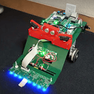
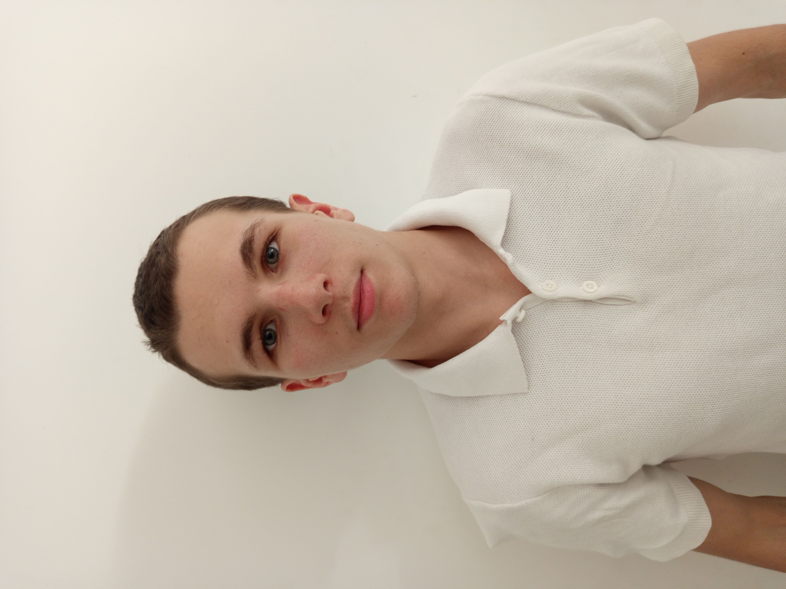
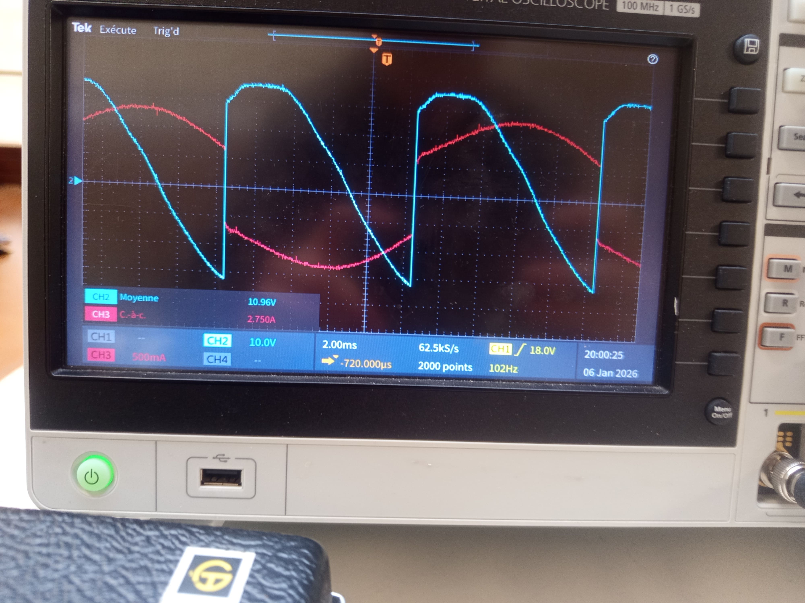
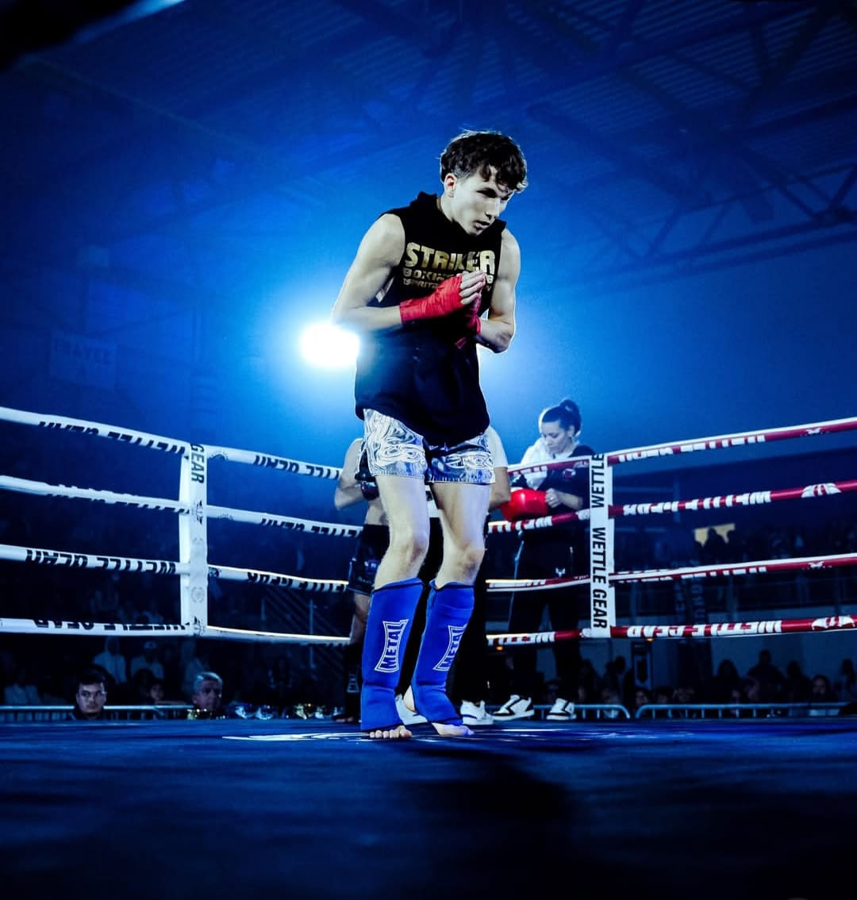
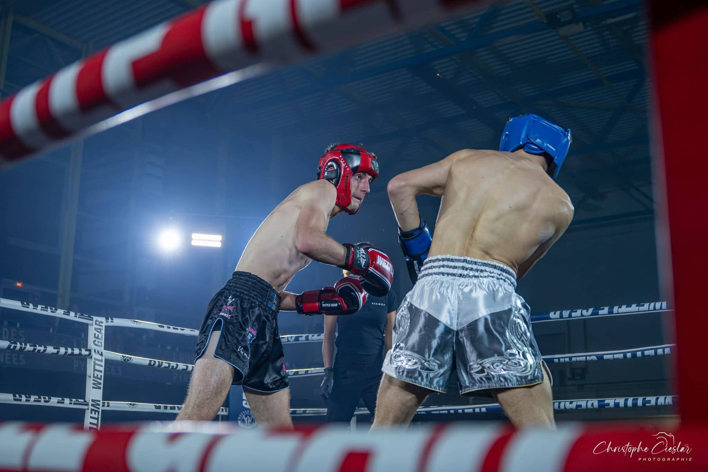
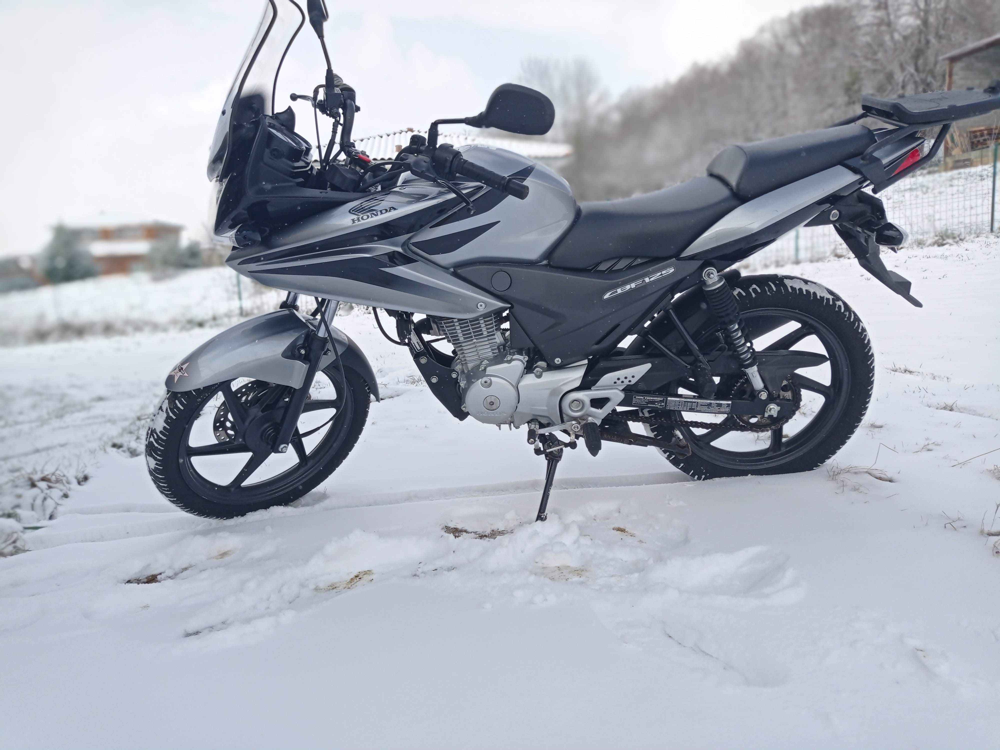
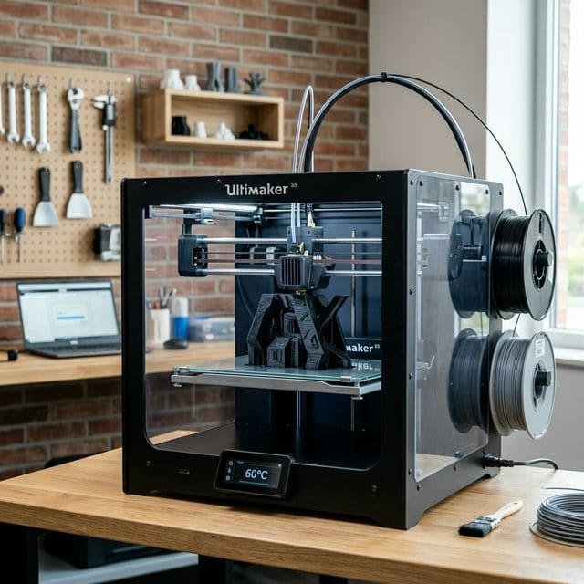

Robot Mobile
Programmation d'un robot en équipe afin qu'il suive un parcours. Filoguidage, lignoguidage et radioguidage.
C/C++
Capteurs
Automatisme
Étudiant en Génie Électrique & Informatique Industrielle
Je m'appelle Enzo Morelli, j'ai 19 ans et je suis en seconde année de BUT GEII option Électricité et Maîtrise de l'Énergie (EME) à l'Institut Universitaire de Tarbes. Ayant suivi un bac technologique STI2D (Sciences et Technologies de l'Industrie et du Développement Durable), je me suis naturellement orienté vers le BUT GEII (Génie Électrique et Informatique Industrielle). Ce parcours représentait en quelque sorte la suite logique de mes études. J'ai également choisi de poursuivre dans cette voie car c'est un domaine qui me passionne et qui offre de réelles perspectives d'avenir. Tout ce qui a trait à l'énergie ou à l'électricité est essentiel pour notre futur.

Un parcours orienté technique, de la théorie à la pratique.
IUT de Tarbes
Option Électricité & Maîtrise de l'Énergie (EME). Projets robotiques, automatisme, électrotechnique et informatique industrielle.
Lycée Paul Mathou — Gourdan-Polignan
Sciences et Technologies de l'Industrie et du Développement Durable. Spécialité Énergie.
Collège Bertrand Laralde — Montréjeau
ENEDIS Saint-Gaudens
Études techniques & Chiffrage : Analyse des besoins et conception de projets de création/renouvellement d’ouvrages de distribution électrique.
Gestion de projet : Coordination des intervenants internes/externes, programmation et suivi de chantier jusqu'à la mise en service.
Relationnel Client : Interface directe avec les nouveaux clients pour le suivi technique des raccordements.
Contrôle Qualité : Réception des chantiers et vérification de la conformité aux règles techniques en vigueur.
McDonald's Estancarbon
Mairie Montréjeau
Des projets concrets qui illustrent mes compétences en GEII.

Programmation d'un robot en équipe afin qu'il suive un parcours. Filoguidage, lignoguidage et radioguidage.
Programmation autonome d'un drone pour scanner le sol, trouver la couleur orange, et maintenir une distance précise.

Installer une gestion d'énergie dans un réseau électrique monophasé constitué d'un gradateur de lumière et d'un chauffage.

Souder des composants sur une carte électronique et tester ces composants (tester la valeur des résistances, relever des tensions).
Des compétences techniques solides, renforcées par des qualités humaines développées sur le terrain.



Grâce à mes projets en BUT GEII et mes expériences professionnelles, j'ai appris à collaborer efficacement, à écouter les autres et à construire des solutions en groupe.
La pratique régulière des arts martiaux m'a inculqué une rigueur personnelle, notamment dans la gestion du temps, la régularité et l'effort constant, même en l'absence de motivation.
Maintien du sang-froid et de l'efficacité en situation d'urgence. Capacité à convertir la pression en concentration, développée par la compétition sportive et le travail à rythme soutenu.
Lors de mes projets, j'ai su travailler de manière autonome tout en respectant les consignes techniques et les échéances.
Que ce soit en entreprise ou lors de projets scolaires, j'ai toujours pris mes tâches au sérieux, avec implication et fiabilité.
Mon orientation en GEII est le fruit d'une réelle curiosité pour les domaines techniques, que je continue d'explorer avec intérêt.
J'ai de nombreux centres d'intérêt, mais le sport occupe une place particulière dans ma vie.
Arts martiaux & condition physique — 3 ans de pratique
Depuis mon plus jeune âge, je pratique différentes disciplines sportives, et au fil du temps, une véritable passion s'est développée. Cela fait maintenant près de trois ans que je pratique les arts martiaux, en particulier le Kickboxing (boxe pieds-poings), mais aussi la lutte, le Jiu-Jitsu brésilien, ainsi que la musculation et la course à pied.
Ces disciplines m'ont énormément apporté. Elles m'ont d'abord inculqué le sens d'une compétition saine, où l'objectif n'est pas de surpasser les autres, mais de me dépasser moi-même et de toujours viser la meilleure version de moi-même. Les compétitions m'ont permis d'apprendre à gérer la pression et le stress — depuis que je pratique intensivement le sport, j'ai su transformer mon anxiété en énergie positive.



Explorer de nouveaux horizons et cultures
Voyager est pour moi une source d'ouverture et d'enrichissement personnel. Partir à la découverte de nouveaux endroits, de nouvelles cultures et de nouvelles personnes est une expérience qui forge le caractère et élargit les horizons.



Passionné de deux-roues, la moto représente pour moi liberté et adrénaline. Une passion pour la mécanique et la route.

L'impression 3D me permet de concrétiser des idées en objets réels. Un lien direct entre la conception numérique et la fabrication physique.
Disponible pour toute opportunité de stage, d'alternance ou de collaboration technique.
Étudiant en 2ème année de BUT GEII, je recherche des opportunités de stage ou d'alternance pour appliquer et enrichir mes compétences en génie électrique et informatique industrielle.
Envoyer un message Télécharger mon CVDurant le premier semestre, j'ai réalisé un projet de drone. Ce projet consistait à programmer un drone en Python. J'étais en équipe de trois personnes pour ce projet.
Ce drone, équipé d'une caméra à l'avant, devait détecter une couleur spécifique (un plot dans notre cas), puis avancer, reculer et tourner autour de cette couleur tout en maintenant une certaine distance et en se positionnant de manière autonome.
Mon équipe n'a pas terminé ce projet, car il nous manquait des éléments et des notions en programmation. Le temps nous a également fait défaut.
Ce projet m'a permis de développer mes compétences en travail collaboratif, notamment la répartition des tâches et la communication technique au sein d'un groupe. J'ai également appris à effectuer des recherches sur des notions spécifiques de programmation, dans cette situation sur la bibliothèque de ce drone pour comprendre comment est ce qu'il fonctionne et comment organiser le programme.
Le projet consiste à installer une gestion d'énergie dans un réseau électrique monophasé constitué d'un gradateur de lumière et d'un chauffage.
L'objectif était de réguler automatiquement la consommation électrique globale en pilotant un gradateur de puissance pour ne jamais dépasser un seuil critique P_max défini par l'utilisateur en implémentant un délesteur de puissance.
Le système était composé d'un gradateur de lumière ainsi que d'un chauffage. Si P_max est atteint la puissance du gradateur doit être réduite pour laisser la priorité au chauffage.
J'ai également réalisé un projet de soudure et de tests. Je devais souder les composants sur une carte électronique, puis en vérifier le fonctionnement.
Par exemple, j'ai soudé des boutons et des diodes, et une fois le circuit alimenté, j'ai dû relever des mesures comme la tension, puis vérifier le bon fonctionnement de chaque composant.
Pour ce projet, nous étions en équipe de deux personnes. Mon équipe a réussi à terminer ce projet sans trop de difficulté.
Cette expérience m'a permis d'acquérir le souci du détail et une méthode de contrôle systématique pour garantir la fiabilité d'un système.